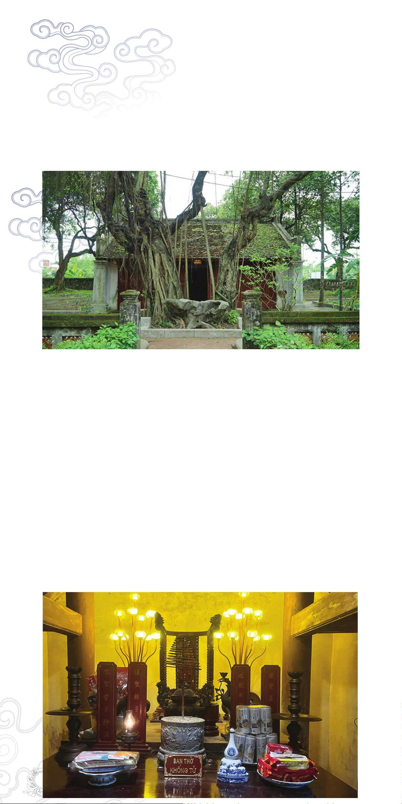

4. 孔子庙
当人们前来华闾古都历史文化遗迹区朝圣时，除了瞻仰祭祀丁朝和前黎朝明君、良将的庙宇系统外，
游客还可以步入一个充满东方人生哲学印记的神圣空间——孔子庙。
这座建筑屹立在黎大行庙院落内的存在，正是越南民族吸收文化之悠久历史的生动证明。此外，这里还是长久以来已深入每个越南人内心的尊师重道精神和悠久好学传统的化身。

来到孔子庙，游客无不为其19世纪阮朝艺术建筑的古色古香所惊叹。该建筑的整个名贵木制框架系统完全采用传统的榫卯技术制作，绝不使用铁钉。这种精湛的技艺向我们展示了古代艺人大师级的手工水平。
在空间布局上，孔庙主要由两座主体建筑组成：拜堂和后宫。
如果说拜堂以宽敞、庄严的空间迎接游客，是准备虔诚仪式的场所，那么后宫则展现出一个深邃、寂静的空间——这里陈列着孔子及其四位杰出弟子（颜回、曾子、子思和孟子）的神龛与牌位。
孔子（公元前551年-公元前479年），字仲尼，出生于鲁国（今中国山东省）。他是一位伟大的哲学家、思想家和杰出的教育家，同时也是儒家的创始人——这种政治、道德学说曾长期作为东方封建王朝思想的基础。贯穿其哲学的是关于“仁”的思想，并结合正名定分和三纲五常学说。在孔子看来，一个名正言顺的社会才是一个稳定、太平、繁荣的社会。其中，三纲体系明确了君臣、父子、夫妻之间的核心关系；而五常则是君子必须始终修炼的五种道德标准，即：仁、礼、义、智、信。
不仅仅是一位政治家或哲学家，孔子还是一位伟大的教育家。他主张“有教无类”（不分阶层的教育观），始终推崇好学精神：务农需要学习，做官治理国家更需要学习。在当时的社会里，这是一种极为进步、超越时代的思想。
与这位伟大导师的思想同行的，是他杰出的弟子们，他们在保存和传播儒家学说方面立下了汗马功劳：
居“四配”之首的是颜回（公元前521年-公元前481年），他是鲁国人，孔子最杰出的弟子。他聪明敏捷，闻一知十。后人将颜回视为孔子之道的理想继承者。颜回年仅32岁便去世了，被儒家尊为“圣”者，位列“四配”之首。
其次是曾子（公元前504年-公元前435年）。在孔子的众弟子中，曾子是对孔子学说核心道理理解透彻、领悟深刻的人。他留下了《大学》和《孝经》两部经典著作，记录了孔子教导弟子的言论。世人认为曾子学派保存了孔子学说的精髓。
继承的弟子是子思（公元前483年-公元前402年）。他被认为是孔子学说的正统继承者。由子思编纂的《中庸》是代表儒家学说人生观的著名著作。他的思想在中国思想史上占有重要地位。他曾将孔子学说广泛传播。儒家常称他为“述圣”，因为他在传述孔子思想和事业方面有功。
最后是孟子（公元前372年-公元前289年）。他是邹国人，在传播和发扬孔子学说方面具有巨大影响，被后代儒家学者尊为“亚圣”。
在华闾古都的历史空间中，孔庙不仅仅是祭祀儒家先贤的地方，更是连接过去与现在的桥梁。这里为后代提供了一个机会，去了解深刻的人生哲理、汲取做人的道理以及先人们的文化精髓。
可以肯定地说，将孔子及其杰出弟子郑重地供奉在国家历史遗迹中，正是越南开放包容、主动有选择地吸收人类文化精髓以丰富充满民族特色之越南文化的清晰证明。